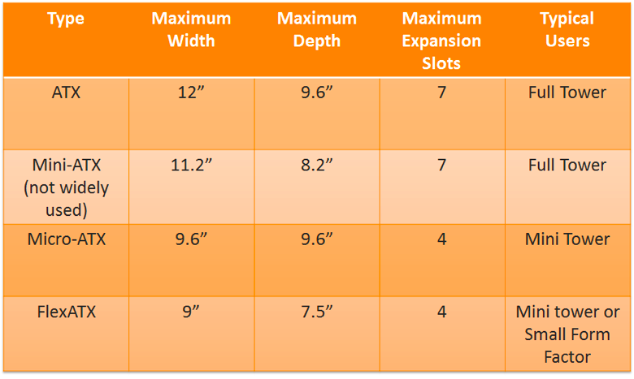
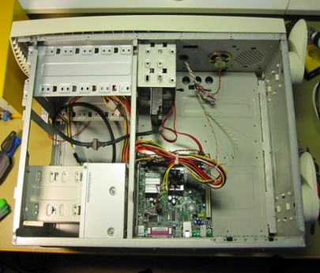

Motherboards and Processors 主機板和處理器 <<
Previous Next >> IO Ports IO端口
構成因素
母板的尺寸和排列方式描述為外形尺寸。ATX規格是現代計算機中使用最廣泛的規格之一。自1990年代以來一直在使用。ATX外形尺寸包含一個用於集成端口（音頻，視頻，聲音，網絡等）的後端口群集。擴展插槽平行於電路板的短邊，並且機箱的左側殼體開口可輕鬆添加擴展卡。
The size and arrangement of the motherboard is described as the form factor. The ATX form factor is one of the most widely used form factors in contemporary computers. It has been in use since the 1990s. The ATX form factor contains a rear port cluster for its integrated ports (audio, video, sound, network, etc.). The expansion slots run parallel to the short side of the board, and the cases have a left-side case opening to support easily adding expansion cards.
迷你ATX尺寸比ATX尺寸小，但仍包含許多ATX功能，例如用於集成端口（音頻，視頻，聲音，網絡等）的後端口群集。擴展插槽平行於電路板的短邊，並且機箱的左側殼體開口可輕鬆添加擴展卡。
The mini-ATX form factor is smaller in size than the ATX form factor, but still contains many of the ATX features, such as a rear port cluster for its integrated ports (audio, video, sound, network, etc.). The expansion slots run parallel to the short side of the board, and the cases have a left-side case opening to support easily adding expansion cards.
如下表所示，ATX尺寸有很多變化，主要區別是板的物理尺寸和擴展插槽的數量。更大的板可提供額外的擴展插槽，但需要更大的塔架。
As shown in the table below, there are many variations of the ATX form factor, with the main difference being the physical size of the board and the number of expansion slots. Bigger boards allow for additional expansion slots, but require a larger tower.

ITX尺寸規格創建於2001年。ITX尺寸規格本身並不十分流行，但是一個名為mini-ITX的變體就變得非常流行，因為它也適用於ATX風格的機殼。它還為集成端口（音頻，視頻，聲音，網絡等）包含一個後部端口集群。擴展插槽平行於板子的短邊延伸，並且外殼具有左側的外殼開口，以支持輕鬆添加擴展卡，就像ATX板一樣。較小的變體，稱為pico-ITX和nano-ITX，通常用於計算設備中，例如智能電視，旨在與電視機集成的互聯網連接的機頂盒設備等。
The ITX form factor was created in 2001. The ITX form factor itself was not very popular, but a variant called the mini-ITX became quite popular, since it also fit into ATX-style cases. It also contains a rear port cluster for its integrated ports (audio, video, sound, network, etc.). The expansion slots run parallel to the short side of the board, and the cases have a left-side case opening to support easily adding expansion cards, just like the ATX boards. Smaller variations, called pico-ITX and nano-ITX, are often used in computing appliances such as smart televisions, Internet-connected set-top devices designed to integrate with TV sets, and others.

Motherboards and Processors 主機板和處理器 <<
Previous Next >> IO Ports IO端口